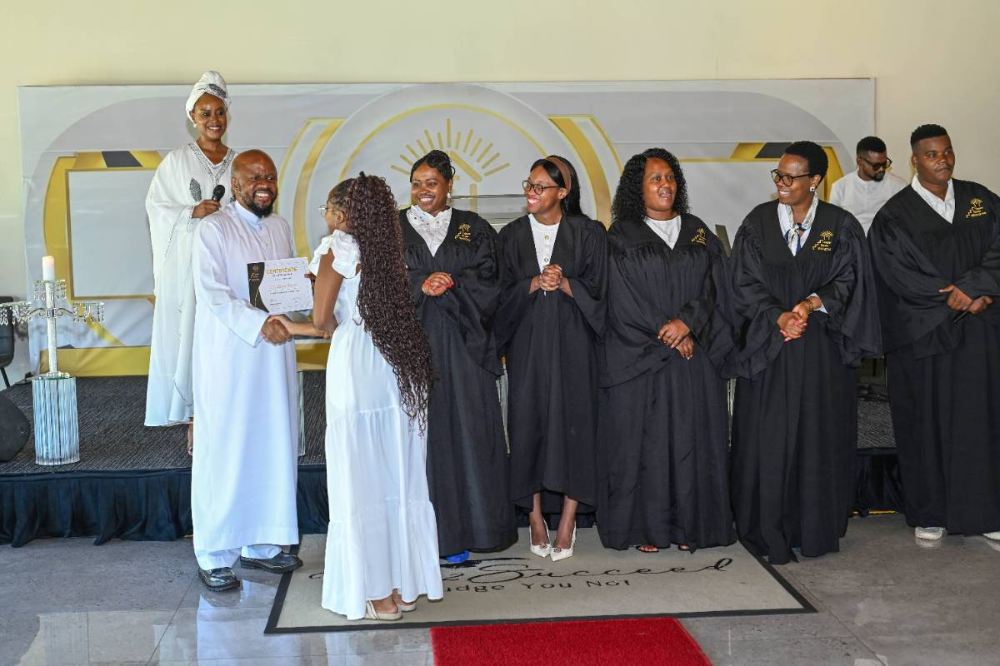

Notes from every session of our Wednesday discipleship class. Catch up on a session you missed, or go back over one before the next class.
"Bring all the tithes into the storehouse so there will be enough food in my Temple." Malachi 3:10. The storehouse is where we receive our spiritual food, so this is where we keep the studies and documents of the house.
Discipleship class runs 19:00 – 20:00 on Microsoft Teams. Join from your phone or computer, wherever you are.